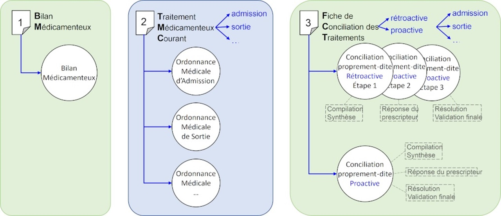
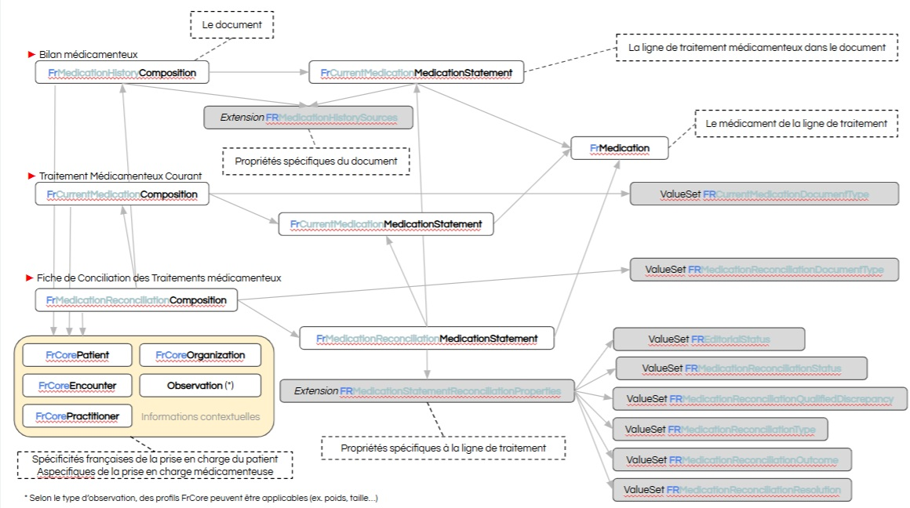
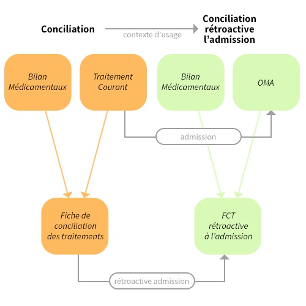
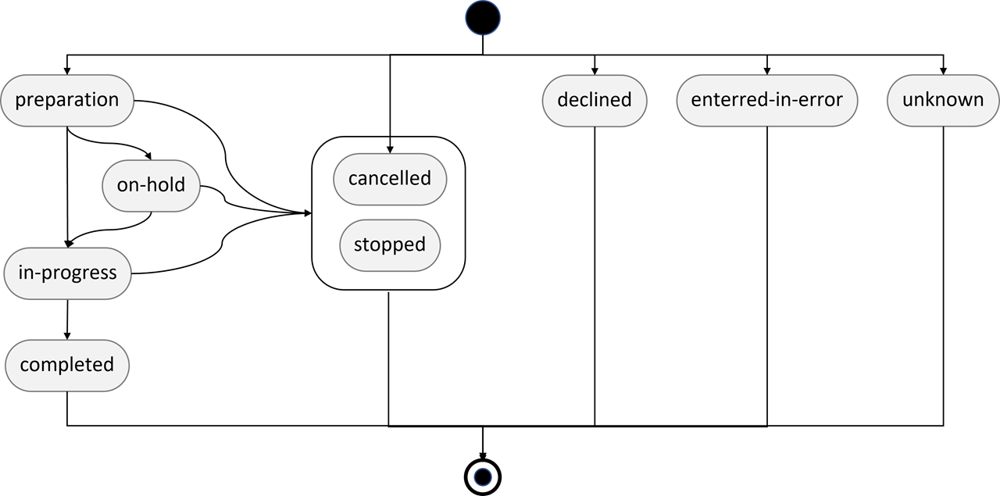

Links: Table of Contents | QA Report Liens: Table des matières | QA | Historique des versions
Show Usage
Show Usage
http://data.esante.gouv.fr/ansm/medicament/UCD
http://data.esante.gouv.fr/ansm/medicament/codeSMS
https://hl7.fr/fhir/fr/medication/CodeSystem/fr-document-type
https://hl7.fr/ig/fhir/core/CodeSystem/fr-core-cs-v2-0203
This fragment is available on index.html
Certaines ressources sémantiques de ce guide sont protégées par des droits de propriété intellectuelle couverte par les déclarations ci-dessous. L’utilisation de ces ressources est soumise à l’acceptation et au respect des conditions précisées dans la licence d’utilisation de chacune d’entre elle.
| Type | Reference | Content |
|---|---|---|
| web | interopsante.org |
|
| web | hl7.fr | Site HL7 |
| web | interopsante.org |
IG © 2020+ Interop'Santé
. Package hl7.fhir.fr.medication#0.1.0 based on FHIR 4.0.1
. Generated 2026-05-27
Links: Table of Contents | QA Report Liens: Table des matières | QA | Historique des versions |
| web | wiki.ihe.net | This is a metadata field from XDS/MHD . |
| web | www.has-sante.fr | Ce Bilan Médicamenteux est la première étape de la Conciliation Médicamenteuse. Voir le guide de la HAS . |
| web | www.has-sante.fr | Type (coding) de la source retenue. Jeu de valeurs ouvert ( extensible ), d'après le guide de la HAS . |
| web | www.has-sante.fr | Valeur du type codé (coding) de la source retenue. Attachée au jeu de valeurs ouvert ( extensible ) fr-medication-history-source-type , d'après le guide de la HAS . |
| web | www.has-sante.fr | type: Coding: Type (coding) de la source retenue. Jeu de valeurs ouvert ( extensible ), d'après le guide de la HAS . |
| web | www.has-sante.fr | Fiche de Conciliation des Traitements médicamenteux (FCT) : Liste des traitements médicamenteux conciliés à partir du Bilan Médicamenteux (traitements avant l'hospitalisation) et du Traitement Médicamenteux Courant, conforme aux recommandations du guide de la HAS . |
| web | www.has-sante.fr | Structure de la FCT française conforme au du guide de la HAS . |
| web | www.has-sante.fr | gravité estimée de la divergence, intitulé « Gravité de l’erreur » dans le guide de la HAS : { mineure ; significative ; majeure ; critique ; catastrophique } |
| web | www.has-sante.fr | Liste des traitements médicamenteux conciliés à partir du Bilan Médicamenteux (traitements avant l’hospitalisation) et de l’Ordonnance médicale d’Admission (OMA), conforme aux recommandations du guide de la HAS . |
| web | snomed.info | 421974008 |
| web | snomed.info | 373846009 |
| web | snomed.info | 1279505009 |
| web | snomed.info | 373808002 |
| web | snomed.info | 261004008 |
| web | snomed.info | 447295008 |
| web | snomed.info | 429892002 |
| web | snomed.info | 1290527003 |
| web | snomed.info | 373847000 |
| web | snomed.info | 363676003 |
| web | snomed.info | 129428001 |
| web | snomed.info | 360271000 |
| web | snomed.info | 360156006 |
| web | snomed.info | 373825000 |
| web | snomed.info | 399707004 |
| web | snomed.info | 262202000 |
| web | www.has-sante.fr | Le domaine couvert est le partage des documents informatisés supportant la conciliation des traitements médicamenteux, conformément aux recommandations du guide méthodologique de mise en oeuvre de la conciliation médicamenteuse publié par la Haute Autorité de Santé. |
| web | www.has-sante.fr | Le profilage de ces ressources répond aux recommandations du guide méthodologique de mise en œuvre de la conciliation médicamenteuse publié par la Haute Autorité de Santé. |
| web | github.com | Pour cela, il suffit de télécharger le package.tgz et l’importer dans un serveur, par exemple sur hapi en suivant ce script python open source. |
| web | www.interopsante.org | Ce domaine est pris en charge par le GT Pharmacie d’HL7 France au sein de l’association Interop’Santé après une première version développée au sein de la communauté SIPh. L’historique des versions et des travaux est détaillé dans la page de suivi des travaux . |
| web | www.iso.org |
ISO maintains the copyright on the country codes, and controls its use carefully. For further details see the ISO 3166 web page: https://www.iso.org/iso-3166-country-codes.html
Show Usage
|
| web | ucum.org |
The UCUM codes, UCUM table (regardless of format), and UCUM Specification are copyright 1999-2009, Regenstrief Institute, Inc. and the Unified Codes for Units of Measures (UCUM) Organization. All rights reserved. https://ucum.org/trac/wiki/TermsOfUse
Show Usage
|
| web | smt.esante.gouv.fr | Les travaux du GT PN13 - FHIR sur la prescription se sont déroulés de janvier 2024 à septembre 2025 La concertation publique a lieu du XXX au XXX Ils ont portés sur: Le mapping des données PN13 - FHIR L’intégration des extensions FrIsVehicle et FrBasisOfDoseComponent dans les profils Prise en compte du Référentiel Unique d’Interopérabilité du Médicament Le prise en compte des travaux de la HAS sur la structuration de la posologie |
| web | siph.phast.fr | Les travaux ont été initiés au sein de la communauté SIPh le 13 septembre 2018. Ils ont produit la version initiale des ressources dédiées à la conciliation. Le détail du suivi des travaux est consultable sur le site de la communauté SIPh . Fin 2020, le fruit de ces travaux a été dévolu à l’association InterOp’Santé pour qu’elle en assure la promotion, le développement et la maintenance. Les ressources publiées sont au statut draft, en attente de retours des premières implémentations. |
| web | groups.google.com | Les travaux ont été initiés également au sein de la communauté SIPh en 2019. Mais ils n’ont pas abouti à un premier niveau de ressources FHIR livrables. En 2021 le groupe Pharmacie d’InterOp’Santé a repris le projet pour aboutir à un profilage de la ressource MedicationRequest et de la ressource Medication adpaté à la prescription en DC et en spécialité identifiée par le code UCD. Cette première version, en date du 31 janvier 2022, voit ses ressources publiées au statut draft, en attente de retours des premières implémentations. Toute remarque, commentaire ou suggestion est bienvenu sur la mailing list PN13-FHIR animée par InterOp’Santé. |
|
Conciliation1.jpg  |
|
Conciliation2.jpg  |
|
Conciliation3.jpg  |
|
Dispensation1.png  |
tree-filter.png 
|